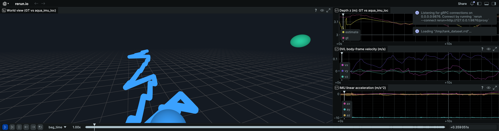
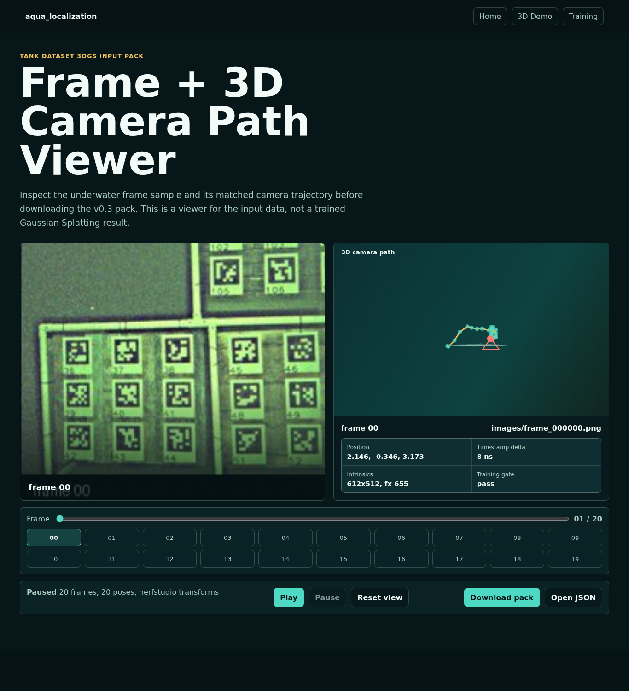
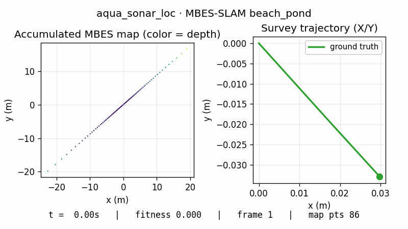
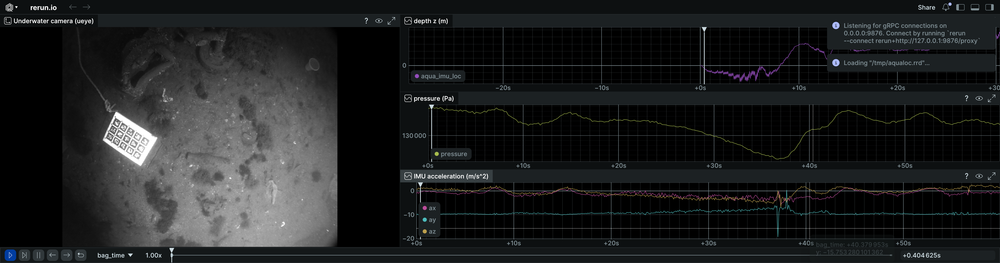

Tank Dataset
DVL fusion reaches 0.43 m APE RMSE on `short_test`.
Underwater 3DGS sample
A simple entry point for viewing the Tank Dataset image pack, matched poses, and localization outputs behind aqua_localization.
The published v0.3 pack contains real Tank Dataset frames, matched trajectory poses, camera intrinsics, and a nerfstudio-style `transforms.json`. It is an input pack for underwater 3DGS experiments, not a trained splat yet.

For now the page stays small: one 3DGS sample entry point and three replayable underwater localization views.


